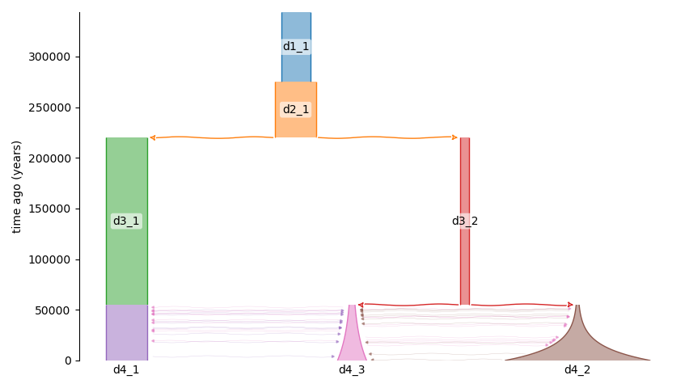
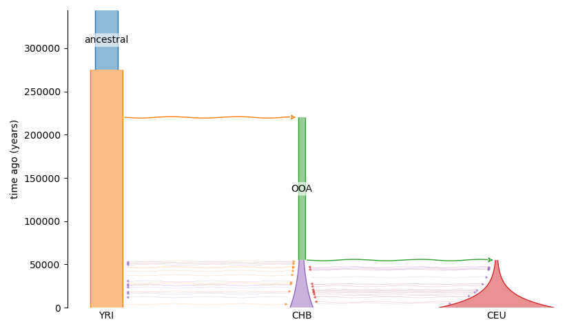
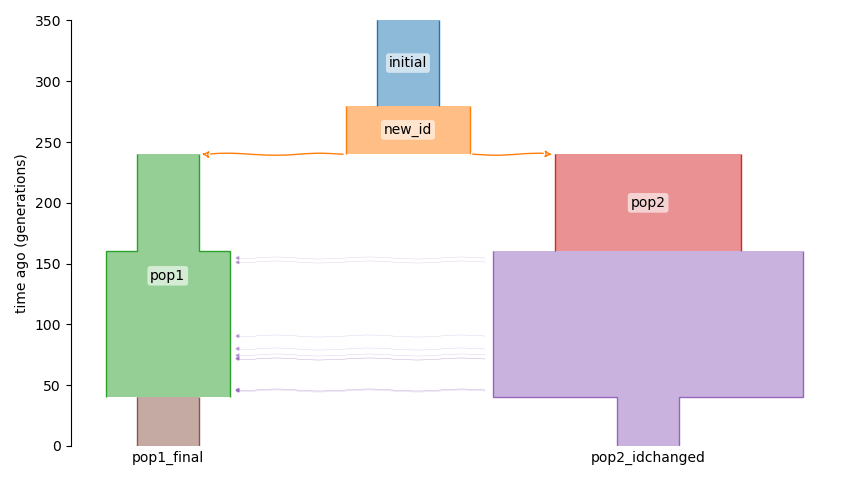

Working with Demes files
Demes is a standardized and human-readable file format for representing demographic models11, enabling interfacing between tools and (with demesdraw) visual representation of models. dadi supports both simulating SFS from Demes files and exporting dadi models into Demes files.
Calculating SFS from Demes files
The SFS corresponding to a Demes file can be easily calculated.
model_file = '../../tests/demes/gutenkunst_ooa.yaml'
sampled_demes = ['YRI', 'CHB', 'CEU']
sample_sizes = [10, 10, 10]
pts_l = [20,30,40]
fs_demes = dadi.Spectrum.from_demes(model_file, sampled_demes=sampled_demes, sample_sizes=sample_sizes, pts=pts_l)
Exporting Demes files corresponding to dadi models
Every time a dadi model is run, the information required to export a Demes version of the model is recorded. The function dadi.Demes.output then returns the corresponding Demes graph. If supplied, the reference population size and generation time will be recorded in the Demes graph as well.
params = (1.4, 0.3, 0.1, 5, 0.2, 1, 0, 0, 0.2, 0.1, 0.1, 0.3, 0.1)
ns, pts = (2,2,2), 10
fs = dadi.Demographics3D.out_of_africa(params, ns, pts)
g = dadi.Demes.output(Nref=11000, generation_time=25)
The demes library can be used to save the graph to a file, or demesdraw can be used to visualize the model.
import demes
g.description = 'Example of demes output from dadi'
demes.dump(g, 'example.yaml')
import demesdraw
ax = demesdraw.tubes(g)
ax.figure.savefig('out_of_africa_defaultnames.png')

Default deme identifiers are assigned, which change along the population history.
To assign more useful identifiers use the deme_mapping argument.
g = dadi.Demes.output(Nref=11000, generation_time=25,
deme_mapping={'ancestral':['d1_1'], 'YRI':['d2_1','d3_1','d4_1'], 'OOA':['d3_2'], 'CEU':['d4_2'], 'CHB':['d4_3']})
ax = demesdraw.tubes(g)
ax.figure.savefig('out_of_africa_renamed.png')

Deme identifiers can also be specified directly within a dadi model function. To do so, use the deme_ids argument in all methods for integration and creating new populations.
from dadi import Numerics, PhiManip, Integration, Spectrum
def named_model(params, ns, pts):
xx = Numerics.default_grid(pts)
phi = PhiManip.phi_1D(xx, deme_ids=['initial'])
phi = Integration.one_pop(phi, xx, 0.1, nu=2, deme_ids=['new_id'])
phi = PhiManip.phi_1D_to_2D(xx, phi, deme_ids=['pop1','pop2'])
phi = Integration.two_pops(phi, xx, 0.2, nu1=1, nu2=3, deme_ids=['pop1','pop2'])
phi = Integration.two_pops(phi, xx, 0.3, nu1=2, nu2=5, m12=0.5, deme_ids=['pop1','pop2_idchanged'])
phi = Integration.two_pops(phi, xx, 0.1, nu1=1, nu2=1, deme_ids=['pop1_final', 'pop2_idchanged'])
fs = Spectrum.from_phi(phi, ns, (xx, xx))
return fs
fs = named_model(None, (1,1), 10)
g = dadi.Demes.output(Nref=200)
ax = demesdraw.tubes(g)
ax.figure.savefig('named_model.png')
